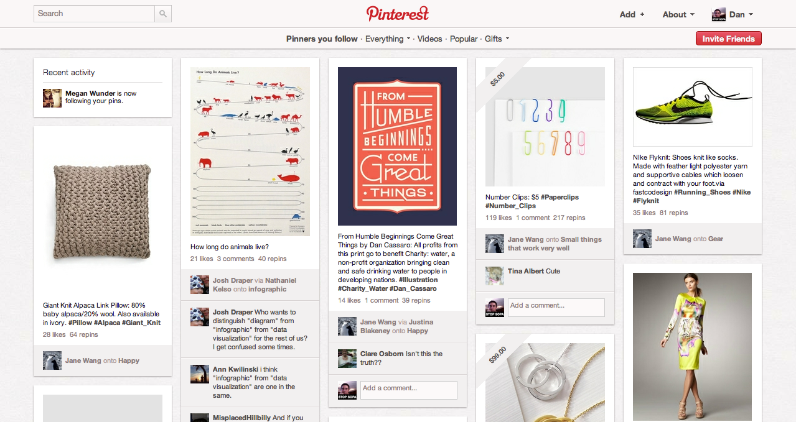
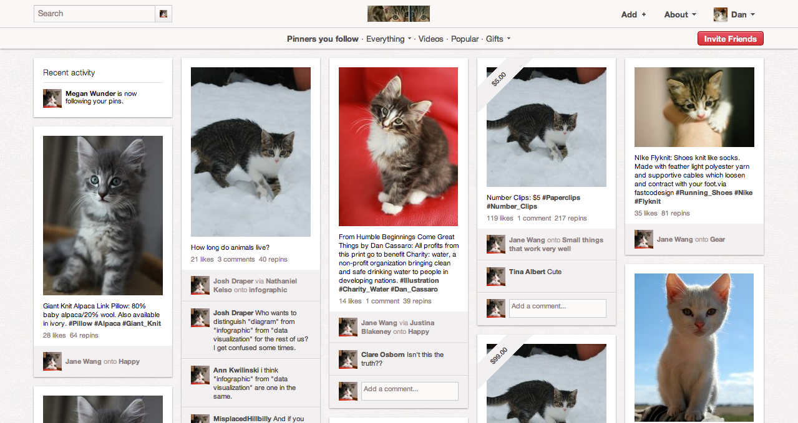

Are you tired of the regular boring internet? Pictures on Facebook of other people's kids and wedding images on Pinterest making you depressed?
Introducing… The Cats Lock Bookmarklet
The greatest invention since sliced bread, the cats lock key will revolutionize the way you browse the internet—filling your life with joy and, of course, cats. With the cats lock bookmarklet, you can instantly revitalize any webpage with content that you care about.
Why you need this
Say you're browsing Pinterest like you do everyday, and all the sudden you feel discouraged by all the items you'll never be able to afford.
Press the Cats Lock bookmarklet and viola, you can be happy with the content on the web once again.
Click and drag this link: Meeooww to your bookmarks and click it whenever you need a little more cuteness on the web.